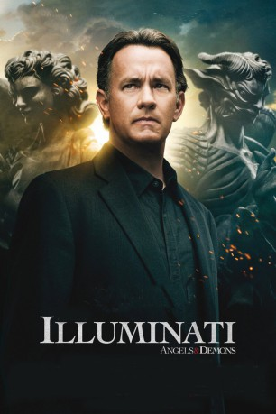

gesehen am 11.10.2016
gesehen am 11.10.2016Alternativ: Angels & Demons gesehen am 11.10.2016
 
 IMDB-Wertung: 6.7 / 10
IMDB-Wertung: 6.7 / 10  Metascore:
Metascore: 
Die Gefahr lauert im Geheimen. Während in Rom die Papstwahlen Gläubige auf der ganzen Welt in Atem halten, plant der untergegangen geglaubte und einst herausragend mächtige Geheimbund "Die Illuminati" den entscheidenden Schlag gegen seinen alten Erzfeind: die katholische Kirche. Das zumindest findet der amerikanische Wissenschaftler Robert Langdon heraus, der keine Zeit verliert und sich in Rom mit der italienischen Kollegin Vittoria Vetra verbündet. Ein Wettlauf mit der Zeit auf der Suche nach altertümlichen Symbolen und der Rettung für den Vatikan beginnt.
Jahr: 2009
Dauer: 146 Minuten
FSK: 12
Land: USA Studio: Columbia PicturesTonspuren: DTS - ,
Untertitel: Deutsch,
Auflösung: 1080p (1920x800) Größe: 7475 MB
Regisseur:  Ron Howard
Ron Howard
Drehbuch: Chuck Hogan
Soundtrack:
Darsteller:
 Tom Hanks als Robert Langdon
Tom Hanks als Robert Langdon Ewan McGregor als Camerlengo Patrick McKenna
Ewan McGregor als Camerlengo Patrick McKenna Ayelet Zurer als Vittoria Vetra
Ayelet Zurer als Vittoria Vetra Stellan Skarsgård als Commander Richter
Stellan Skarsgård als Commander Richter Pierfrancesco Favino als Inspector Olivetti
Pierfrancesco Favino als Inspector Olivetti Nikolaj Lie Kaas als Assassin
Nikolaj Lie Kaas als Assassin Armin Mueller-Stahl als Cardinal Strauss
Armin Mueller-Stahl als Cardinal Strauss Thure Lindhardt als Chartrand
Thure Lindhardt als Chartrand David Pasquesi als Claudio Vincenzi
David Pasquesi als Claudio Vincenzi Carmen Argenziano als Father Silvano Bentivoglio
Carmen Argenziano als Father Silvano Bentivoglio Rance Howard als Cardinal Beck
Rance Howard als Cardinal Beck Elya Baskin als Cardinal Petrov
Elya Baskin als Cardinal Petrov Thomas Morris als Urs Weber
Thomas Morris als Urs Weber Steve Kehela als American Reporter
Steve Kehela als American Reporter Kristof Konrad als Polish Reporter
Kristof Konrad als Polish Reporter Cheryl Howard als CERN Scientist
Cheryl Howard als CERN Scientist Endre Hules als CERN Scientist
Endre Hules als CERN Scientist Norbert Weisser als CERN Scientist
Norbert Weisser als CERN Scientist Anna Katarina als Docent
Anna Katarina als Docent Roy Allen III als Cardinal , uncredited
Roy Allen III als Cardinal , uncreditedDatei: X:\3-Trilogie(N-Z)\Robert Langdon\Illuminati (2009, FSK12, 1920x800).mkv seit 05.10.2016
Festplatte: HD Collection-3(N-Z)-6(A-Z)
 Alle Filme aus Gruppe '3-Trilogie(N-Z)\Robert Langdon'
Alle Filme aus Gruppe '3-Trilogie(N-Z)\Robert Langdon'